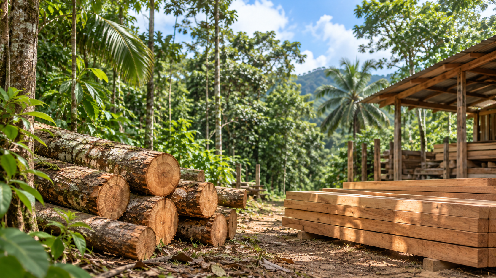
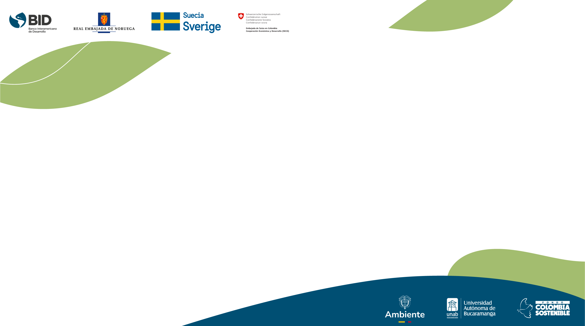
Instrumentos para la compra y consumo responsable de productos forestales maderables
Tabla de contenido
Módulo 2
Instrumentos normativos
Instrumentos técnicos
Instrumentos de mercado
01
02
03
Video inicial
Veamos los recursos forestales
RESUMEN DEL MÓDULO ANTERIOR
Bosque natural: se define como la extensión de tierra mínima de 1 hectárea, ocupada principalmente por árboles, con una cobertura de copas mínima del 30 %, y altura mínima del dosel de 5 metros. Dentro del área también puede haber arbustos, palmas, guaduas, hierbas y lianas. Se excluyen de esta definición las coberturas arbóreas no naturales, como las plantaciones forestales y cultivos comerciales.
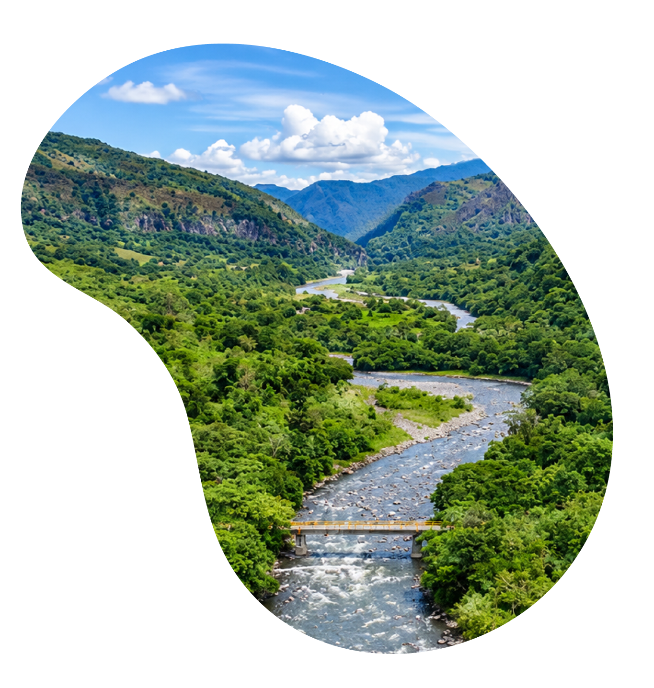
Bosque plantado: corresponde a las áreas de reforestación con especies tanto nativas como exóticas, y cuyo establecimiento puede ser el producto de un proceso productivo o con fines de protección y conservación ambiental.
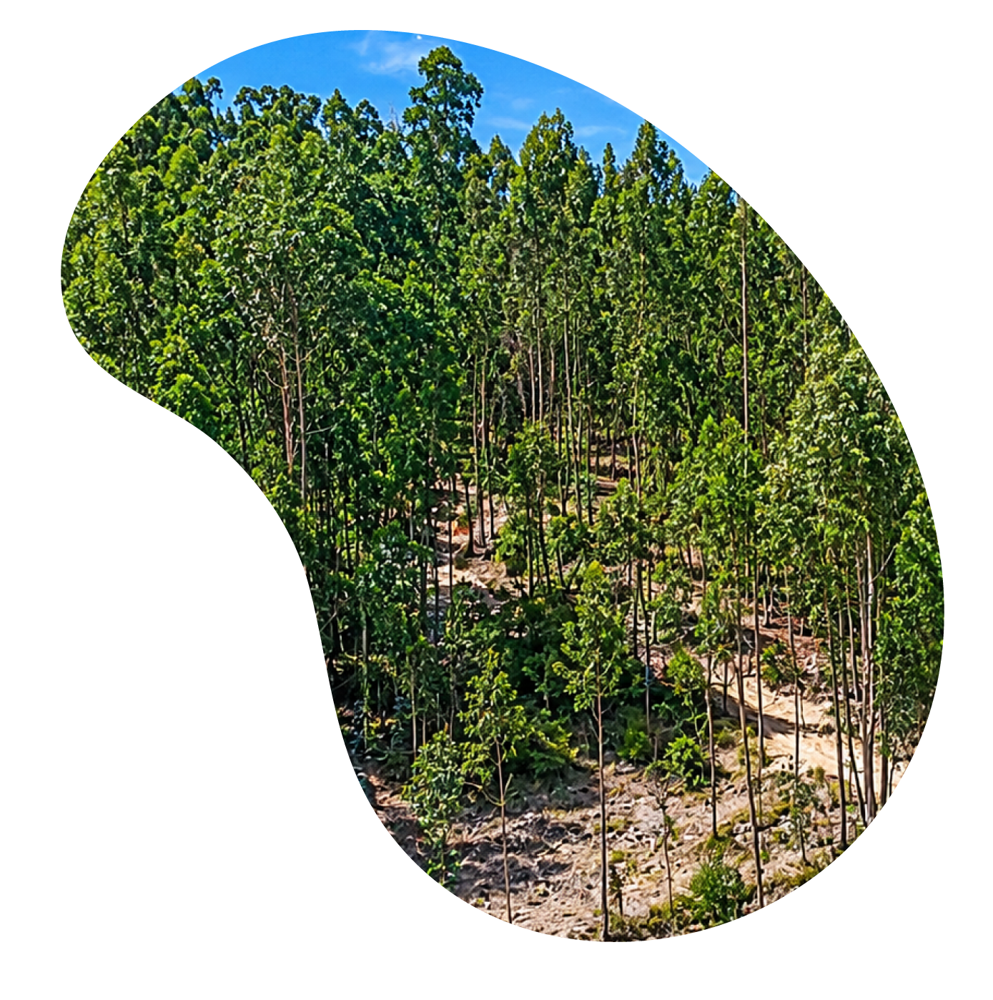
Otros ecosistemas forestales: tierra ocupada por ecosistemas con presencia de individuos forestales con distribución dispersa, incluyen pastos arbolados; o en arreglos con baja densidad de individuos forestales, arreglos agrosilvopastoriles.
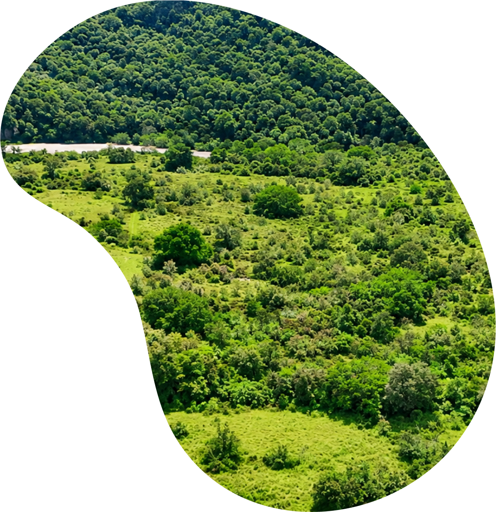
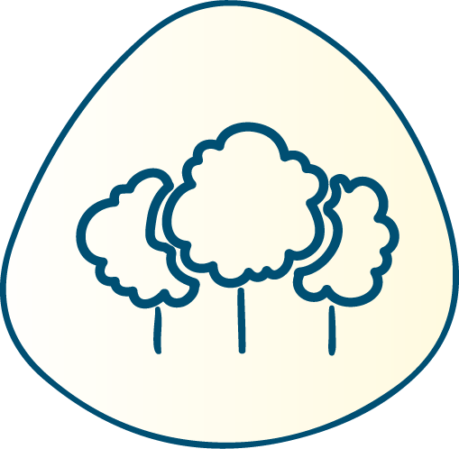
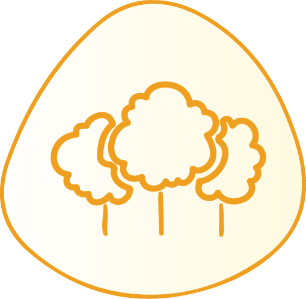
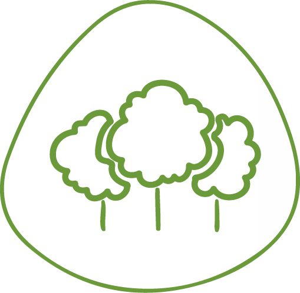
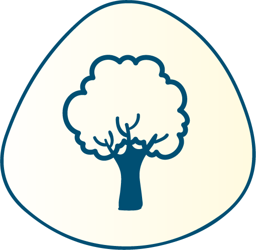
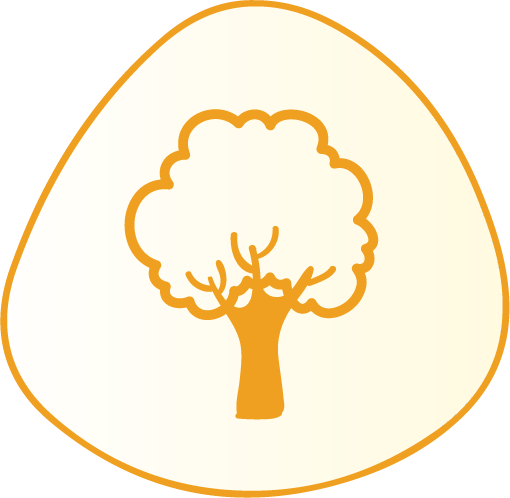
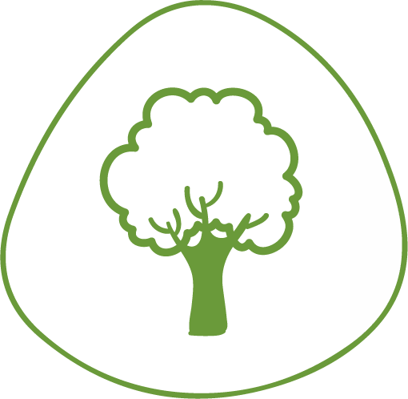
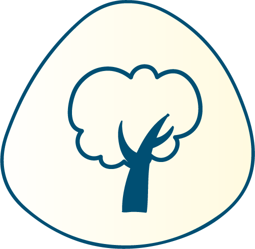
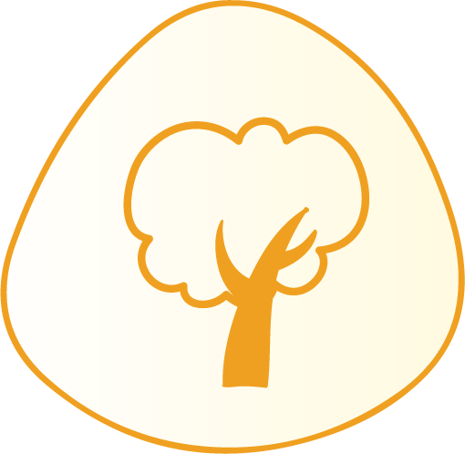
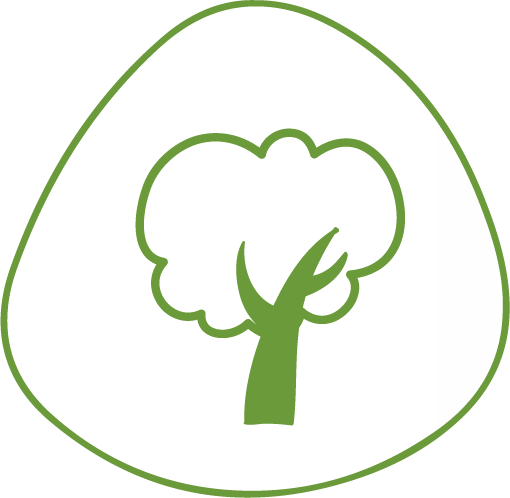
En el módulo anterior vimos cómo los recursos forestales se constituyen por el conjunto de recursos naturales bióticos y abióticos del bosque; y que tienen un valor ecológico, económico, social o cultural. Estos pueden ser aprovechados de forma sostenible para satisfacer necesidades humanas y conservar el equilibrio ecológico.
Incluye otros ecosistemas con presencia de árboles.
Fuente: IDEAM y Ministerio de Ambiente y Desarrollo Sostenible (2024).
Estudia este video introductorio sobre el Marco Normativo Forestal
Instrumentos normativos
Módulo 2
GIZ Colombia. (2024). La normativa Forestal [Video]. YouTube. https://www.youtube.com/watch?v=csJcKeLyCks&t=117s
En resumen, sobre el video introductorio del marco normativo forestal…
Módulo 2
Bosque Natural
Otros ecosistemas naturales: páramos, humedales, sabanas, etc.
Plantaciones forestales protectoras
Plantaciones forestales protectoras-productoras
Plantaciones forestales y sistemas agroforestales con fines comerciales
¿Dónde desarrollas tu actividad?
¿Qué recursos se pueden obtener?
Área forestal protectora
Área forestal productora
Fuente: GIZ Colombia. (2024). La normativa Forestal [Video]. YouTube. https://www.youtube.com/watch?v=csJcKeLyCks&t=117s
Productos forestales no maderables
Productos forestales maderables y no maderables
Flora silvestre/acuática
Flora silvestre/acuática
Productos forestales no maderables
No aplica
Productos forestales maderables y no maderables
Productos forestales maderables y no maderables
No aplica
Productos forestales maderables y no maderables
MARCO NORMATIVO FORESTAL
Módulo 2
Marco normativo forestal aplicable al bosque natural, otros ecosistemas, plantaciones forestales protectoras, plantaciones forestales protectoras-productoras
1959
Ley 2a
Sobre economía forestal de la nación y conservación de RNR (7 reservas forestales).
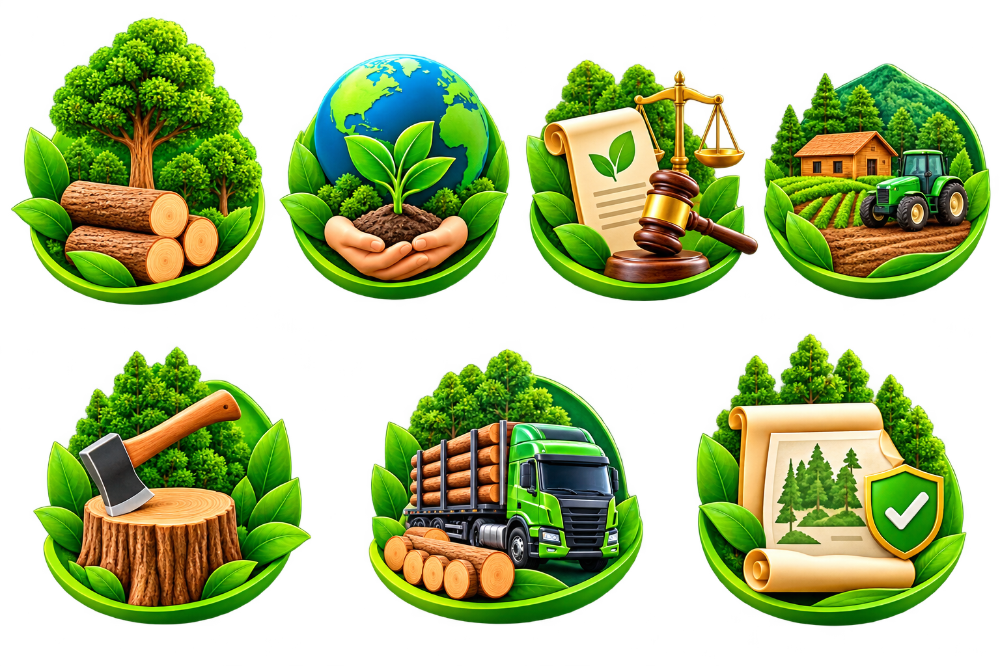
1974
Decreto ley 2811 Código nacional de los recursos naturales renovables y del medio ambiente.
1991
Constitución Política de Colombia
“Constitución Verde”
Ley 21
Convenio sobre pueblos indígenas y tribales en países independientes (Convenio de la OIT No. 169, 1989).
1993
Ley 70
Desarrolla el artículo transitorio 55 de la Constitución Política de Colombia.
Ley 99
Crea el Minambiente, reordena el sector público, la gestión y conservación, los RNR, y organiza el SINA.
1994
Ley 139
Crea el Certificado de Incentivo Forestal (CIF): reforestación y conservación.
Ley 160
Sistema Nacional de la Reforma Agraria y Desarrollo Rural Campesino.
1996
Decreto 1791
Régimen de aprovechamiento forestal.
CONPES 2834
Política de Bosques.
2015
Decreto 1076
Decreto Único Reglamentario del Sector Ambiente y Desarrollo Sostenible, compiló el Decreto 1791 de 1996
arts. 2.1.1.1.1.1 a 2.2.1.2.1.3.
Fuentes: Ministerio de Ambiente y Desarrollo Sostenible (s.f.); Presidencia de la República de Colombia (2015).
1959
Dicta normas sobre economía forestal de la Nación y conservación de recursos naturales renovables, generando disposiciones referentes a los planes de ordenación forestal. Además, se determinan 7 grandes zonas de reserva forestal para el desarrollo de la economía forestal y la protección de los suelos, las aguas y la vida silvestre.
1974
El código nacional de recursos naturales renovables y la protección del medio ambiente se establece mediante el Decreto Ley 2811 de 1974, el cual reguló, entre otros aspectos, el manejo de los suelos forestales por su naturaleza y el manejo de los bosques que contienen denominadas áreas forestales. Además, señaló que estas podrían ser productoras, protectoras y protectoras-productoras.
1991
La Constitución Política de Colombia, en su artículo 8, ordena al Estado y a las personas proteger las riquezas culturales y naturales de la nación. En su artículo 79 reconoce el derecho de todas las personas a gozar de un ambiente sano y exige la participación de la comunidad en las decisiones que lo afecten. Además, el artículo 80 ordena al Estado planificar el manejo y aprovechamiento de los recursos naturales para garantizar su desarrollo sostenible.
1993
La Ley 70 señala en el artículo 6 que, en los suelos y en los bosques incluidos en la titulación colectiva, la propiedad se ejercerá en función social y le es inherente una función ecológica. El uso de los bosques que se ejerza por ministerio de ley, como los aprovechamientos forestales con fines comerciales, deberán garantizar la persistencia del recurso. Para adelantar estos últimos se requiere la autorización de la entidad competente para el manejo del recurso forestal.
1994
La Ley 139, en cumplimiento de los deberes asignados al Estado por los artículos 79 y 80 de la Constitución Política, crea el Certificado de Incentivo Forestal, CIF, como un reconocimiento del Estado a las externalidades positivas de la reforestación, en tanto los beneficios ambientales y sociales generados son apropiables por el conjunto de la población. Su implementación es competencia del Ministerio de Agricultura y Desarrollo Rural.
1996
La Política de Bosque contempla como una de sus estrategias modernizar el sistema de administración de los bosques; y como una de las líneas de acción formular y expedir el estatuto único de bosques y flora silvestre, entre otros instrumentos para el aprovechamiento sostenible, y el Régimen de Aprovechamiento Forestal compilado en el Decreto 1076 de 2015.
2015
El Decreto Único Reglamentario del Sector Ambiente y Desarrollo Sostenible en Colombia tiene como objetivo compilar y unificar todas las normas ambientales del país en un solo documento, para facilitar su consulta y aplicación, regulando la protección, conservación y uso sostenible de los recursos naturales.
MARCO NORMATIVO FORESTAL
Módulo 2
Marco normativo forestal aplicable al bosque natural, otros ecosistemas, plantaciones forestales protectoras, plantaciones forestales protectoras-productoras
2017
Resolución 1909 de 2017
Establece el Salvoconducto Único Nacional en Línea SUNL en VITAL para especímenes de la diversidad biológica.
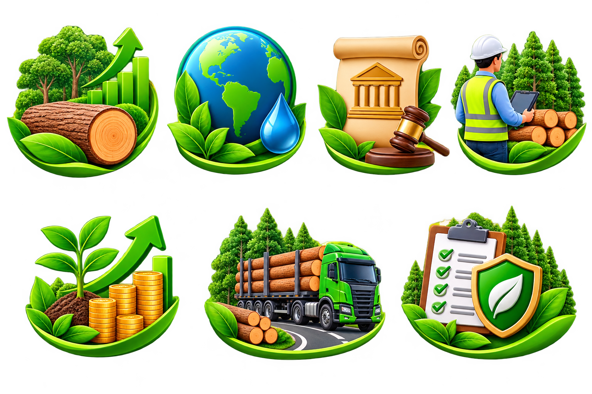
2018
Decreto 1390 de 2018
Tasa de aprovechamiento forestal.
2019
Decreto 1532 de 2019
Reglamenta las Plantaciones Forestales Protectoras y Protectoras-Productoras.
Resolución 1971 de 2019
Establece el Libro de operaciones en Línea LOFL – Empresas Forestales.
2024
Resolución 126 de 2024
Por la cual se establece el listado oficial de las especies silvestres amenazadas de la diversidad biológica continental y marino costera y se dictan otras disposiciones.
Fuentes: Ministerio de Ambiente y Desarrollo Sostenible (2017, 2019, 2024); Presidencia de la República de Colombia (2018, 2019).
2017
La Resolución 1909 de 2017 establece el Salvoconducto Único Nacional en Línea para la movilización de especímenes de la diversidad biológica. Esta resolución fue emitida por el Ministerio de Ambiente y Desarrollo Sostenible y tiene como objetivo regular el manejo, aprovechamiento, transporte y comercialización de especies e individuos de la flora y fauna silvestre.
2018
El Decreto 1390 de 2018 fue emitido el 2 de agosto de 2018 y tiene como objetivo adicionar un capítulo al Título 9, de la Parte 2, del Libro 2, del Decreto 1076 de 2015, relacionado con la Tasa Compensatoria por Aprovechamiento Forestal Maderable en bosques naturales. Este decreto establece disposiciones sobre el manejo y aprovechamiento de los recursos naturales, promoviendo el desarrollo sostenible y la conservación del ambiente.
2019
El Decreto 1532 de 2019, promulgado el 26 de agosto de 2019, modifica la Sección 1 del Capítulo 1 del Título 2 de la Parte 2 del Libro 2 y sustituye la Sección 12 del Capítulo 1 del Título 2 de la Parte 2 del Libro 2 del Decreto Único Reglamentario del Sector Ambiente y Desarrollo Sostenible 1076 de 2015, relacionado con las plantaciones forestales. Este decreto establece regulaciones sobre la protección del medio ambiente y el manejo de recursos naturales, incluyendo la necesidad de obtener permisos para el aprovechamiento de productos forestales primarios.
La Resolución 1971 de 2019 establece el Libro de Operaciones Forestales en Línea y dicta otras disposiciones relacionadas con la gestión y el control de los recursos naturales renovables en Colombia. Esta resolución es parte de un conjunto de normas que buscan regular y supervisar las actividades forestales, asegurando el uso sostenible y la protección del medio ambiente.
2024
La Resolución 126 de 2024 establece el listado oficial de las especies silvestres amenazadas de la diversidad biológica en Colombia, incluyendo tanto especies del área continental como marino costera. Esta resolución actualiza el Comité Coordinador de Categorización de las Especies Silvestres Amenazadas y establece criterios para clasificar las especies según su amenaza. Además, se enfatiza la importancia de proteger y conservar la biodiversidad como un patrimonio nacional.
MARCO NORMATIVO FORESTAL
Módulo 2
Marco normativo forestal aplicable a plantaciones forestales y sistemas agroforestales con objetivo comercial
2015
DUR 1071 de 2015 Decreto Único Reglamentario del Sector Agropecuario, Pesquero y de Desarrollo Rural.
2018
Resolución 38438 de 2018 del ICA
2019
Decreto 2398 de 2019
Por medio del cual se
sustituye el Título 3 de la Parte 3 del Libro 2 del DUR 1071 de 2015.
2020
Resolución 071641 de 2020 del ICA
Fuente: Presidencia de la República de Colombia (2015).
2015
Decreto 1071 de 2015 “Por medio del cual se expide el Decreto Único Reglamentario del Sector Administrativo Agropecuario, Pesquero y de Desarrollo Rural”. Su objetivo es compilar, racionalizar y unificar en un solo instrumento jurídico todas las normas reglamentarias vigentes del Sector Administrativo Agropecuario, Pesquero y de Desarrollo Rural en Colombia, facilitando la consulta y aplicación de las leyes que rigen al Ministerio de Agricultura y entidades adscritas (como el ICA o la ANT), optimizando el ordenamiento jurídico del país.
2018
Resolución 38438 de 2018 del ICA "Por medio de la cual se adoptan las medidas fitosanitarias para el embalaje de madera utilizado en el comercio internacional acorde a la Norma Internacional de Medidas Fitosanitarias (NIMF No.15) y se establecen los requisitos para el registro ante el ICA de operador autorizado para la aplicación del tratamiento y colocación del sello NIMF 15”.
2019
Decreto 2398 de 2019 del Ministerio de Agricultura y Desarrollo Rural “Por medio del cual se sustituye el Título 3 de la Parte 3 del Libro 2 del Decreto Único Reglamentario del Sector Agropecuario, Pesquero y de Desarrollo Rural 1071 de 2015, relacionado con el certificado de movilización de plantaciones forestales comerciales”. En el artículo 2.3.3.3 se señala que el ICA trabaja en La implementación del registro de plantaciones forestales y sistemas agroforestales con fines comerciales en el ámbito rural hasta la frontera agrícola y que tiene entre sus funciones la expedición del certificado de movilización de productos de transformación primaria provenientes de las plantaciones forestales y sistemas agroforestales con fines comerciales, debidamente registrados.
2020
Resolución 071641 de 2020 del ICA “Por medio de la cual se establecen los requisitos y los procedimientos para el registro ante el ICA de plantaciones forestales comerciales y la expedición de certificados de movilización de productos de transformación primaria obtenidos de las plantaciones forestales comerciales registradas en el territorio nacional”.
Administración del acceso al recurso forestal
Módulo 2
Bosque natural
Árboles aislados
Plantaciones forestales protectoras
Plantaciones forestales protectoras-productoras
Cercas vivas
Barreras rompevientos
Árboles de sombrío
Árboles frutales con características leñosas
Guaduales y bambusales categorías 1 y 2
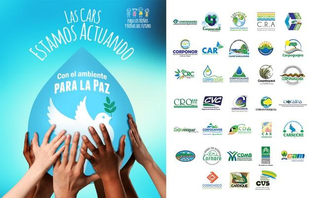
Plantaciones forestales protectoras-productoras
De acuerdo con el Decreto 1532 de 2019 del Ministerio de Ambiente y Desarrollo Sostenible, en el artículo 2.2.1.1.12.1, es competencia de las autoridades ambientales regionales competentes registrar las plantaciones forestales protectoras-productoras y productoras.
Fuente: Presidencia de la República de Colombia (2019).
Árboles aislados
El artículo 2.2.1.1.12.14 indica que los árboles aislados y de sombrío podrán ser objeto de aprovechamiento para obtener productos forestales y será competencia de las autoridades ambientales regionales
Fuente: Presidencia de la República de Colombia (2019).
Cercas vivas
El parágrafo 1 del artículo 2.2.1.1.12.9 menciona que el aprovechamiento de las cercas vivas y barreras rompevientos no requerirá ningún permiso o autorización. En caso de requerir movilización de los productos derivados deberá obtener el Salvoconducto Único Nacional en Línea – SUNL.
Fuente: Presidencia de la República de Colombia (2019).
Barreras rompevientos
El parágrafo 1 del artículo 2.2.1.1.12.9 menciona que el aprovechamiento de las cercas vivas y barreras rompevientos no requerirá ningún permiso o autorización. En caso de requerir movilización de los productos derivados deberá obtener el Salvoconducto Único Nacional en Línea – SUNL.
Fuente: Presidencia de la República de Colombia (2019).
Árboles de sombrío
El artículo 2.2.1.1.12.14 indica que los árboles aislados y de sombrío podrán ser objeto de aprovechamiento para obtener productos forestales y será competencia de las autoridades ambientales regionales
Fuente: Presidencia de la República de Colombia (2019).
Árboles frutales con características leñosas
El artículo 2.2.1.1.12.13 sobre especies frutales con características leñosas señala que podrán ser objeto de aprovechamiento para obtener productos forestales en cuyo caso requerirán únicamente el Salvoconducto Único Nacional en Línea – SUNL.
Fuente: Presidencia de la República de Colombia (2019).
Guaduales y bambusales categorías 1 y 2
La Ley 2206 de 2022 tiene como objetivo fomentar el uso productivo de la guadua y el bambú en diversos sectores de la economía, incluyendo la industria, la construcción y la agroindustria, en armonía con la sostenibilidad ambiental y los servicios ecosistémicos que contribuyen a la mitigación del cambio climático.
Fuente: Congreso de la República de Colombia (2022).
Administración del acceso al recurso forestal
Módulo 2
Cultivos o plantaciones forestales comerciales
Sistemas Agroforestales - SAF
Plantaciones forestales con recursos del Certificado de Incentivo Forestal
Barreras rompevientos y cercas vivas*
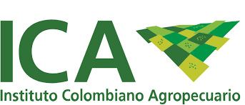
Ver más
• Siembra de especies forestales arbóreas realizada por la mano del hombre.
• Densidades de siembra uniformes.
• Individuos coetáneos.
• Finalidad de la plantación, obtención y comercialización de productos maderables.
• Combinación de siembra de especies forestales arbóreas, producción agrícola o ganadería.
• Identificación clara de la distribución espacial de los árboles en el sistema productivo (densidad).
• Identificación clara de la distribución temporal de los árboles en el sistema productivo (coetáneos).
Plantaciones forestales protectoras-productoras que hayan sido establecidas con recursos del Certificado de Incentivo Forestal de la Ley 139 de 1994.
*Barreras rompevientos y cercas vivas que hagan parte de cultivos forestales, sistemas agroforestales y plantaciones CIF.
Registro de plantaciones forestales y sistemas agroforestales con fines comerciales
El registro de plantaciones forestales y sistemas agroforestales con fines comerciales tiene como objetivo permitir la cosecha forestal para la obtención de productos forestales maderables (madera). No aplica para la producción de látex o de productos no maderables que sean aprovechados de plantaciones forestales comerciales.
Fuente: Presidencia de la República de Colombia (2020).
Pon a prueba tus conocimientos
Módulo 2
¿Qué entidad tiene la competencia de registrar los sistemas agroforestales SAF?
¡Selecciona la respuesta correcta!
a.
Ministerio de Ambiente y Desarrollo Sostenible.
b.
Autoridad Ambiental Regional.
c.
Instituto Colombiano Agropecuario.
Retroalimentación:
Muy bien.
Continuar
Retroalimentación:
Repasa el contenido.
Reintentar
Pon a prueba tus conocimientos
Módulo 2
¿Qué entidad tiene la competencia de registrar las plantaciones forestales protectoras productoras que no accedieron a CIF?
¡Selecciona la respuesta correcta!
a.
Ministerio de Ambiente y Desarrollo Sostenible.
b.
Autoridad Ambiental Regional competente.
c.
Instituto Colombiano Agropecuario.
Retroalimentación:
Muy bien.
Continuar
Retroalimentación:
Repasa el contenido.
Reintentar
Pon a prueba tus conocimientos
Módulo 2
¿El aprovechamiento de las cercas vivas y barreras rompevientos que no hagan parte de cultivos forestales, sistemas agroforestales y plantaciones CIF requerirán algún permiso o autorización?
¡Selecciona la respuesta correcta!
a.
Sí, ante la Autoridad Ambiental Regional.
b.
No, solo requerirán SUNL.
Retroalimentación:
Muy bien.
Continuar
Retroalimentación:
Repasa el contenido del decreto 1532 de 2019.
Reintentar
El sistema de trazabilidad forestal
Módulo 2
A través de la plataforma VITAL puedes consultar la veracidad del Salvoconducto Único Nacional en Línea y la Remisión del Libro de Operaciones Forestales en Línea.
AA
COMERCIO
CIUDADANÍA GENERAL
ENTES DE CONTROL
APROVECHAMIENTO
MOVILIZACIÓN
Sistema de Información de Licencias Ambientales (SILA)
Salvoconducto Único Nacional
en Línea (SUNL)
Libro de Operaciones
Forestales en Línea (LOFL)
COMERCIALIZACIÓN
PLANIFICACIÓN
Sistema Nacional
de Información Forestal (SNIF)
Sistema de Información sobre Biodiversidad
(SIB COLOMBIA)
ESQUEMA DE INTEGRACIÓN
Ver más
Sistema Nacional de Trazabilidad Forestal
El objetivo es implementar un Sistema Nacional de Trazabilidad Forestal en línea que permita realizar el seguimiento histórico, ubicación y trayectoria a los productos forestales de primer y segundo grado de transformación, a lo largo de su cadena de abastecimiento, desde su origen hasta su destino final.
Plataforma tecnológica en línea, vía web, de Registro de Plantaciones Forestales y Expedición de Certificados de Movilización para la Madera, proveniente de Plantaciones Forestales en Colombia.
Aplicativo forestales+
Módulo 2
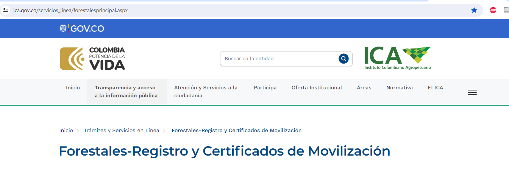
A través de este aplicativo puedes consultar la veracidad del certificado de movilización.
Ver más
Aplicativo Forestales
El Aplicativo Forestales del ICA es una herramienta tecnológica vía web que permite el registro de plantaciones forestales y sistemas agroforestales con fines comerciales; y la expedición de certificados de movilización de productos de transformación primaria obtenidos de áreas debidamente registradas.
PRODUCTOS FORESTALES MADERABLES
Módulo 2
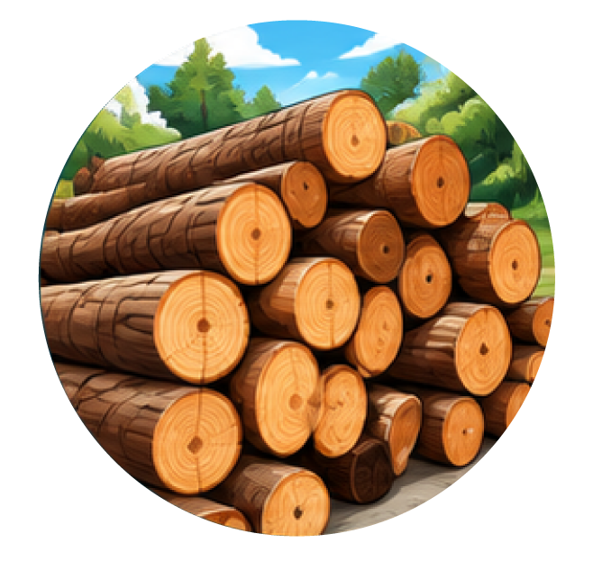
Troza
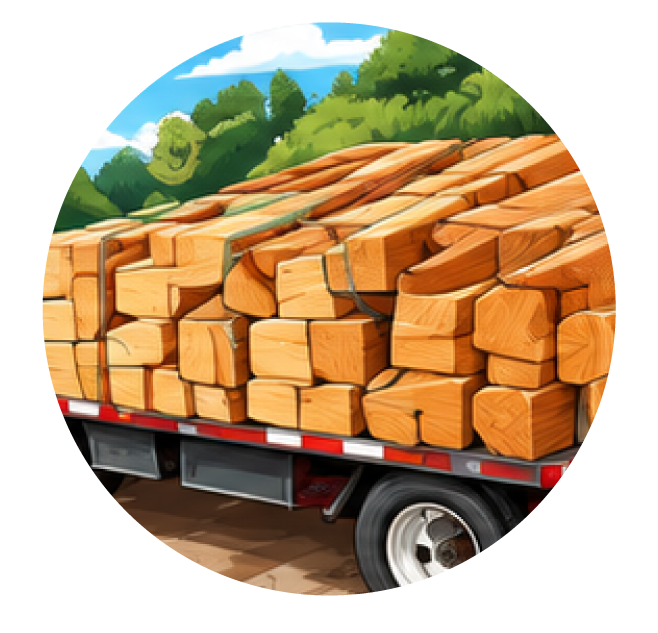
Cuartón
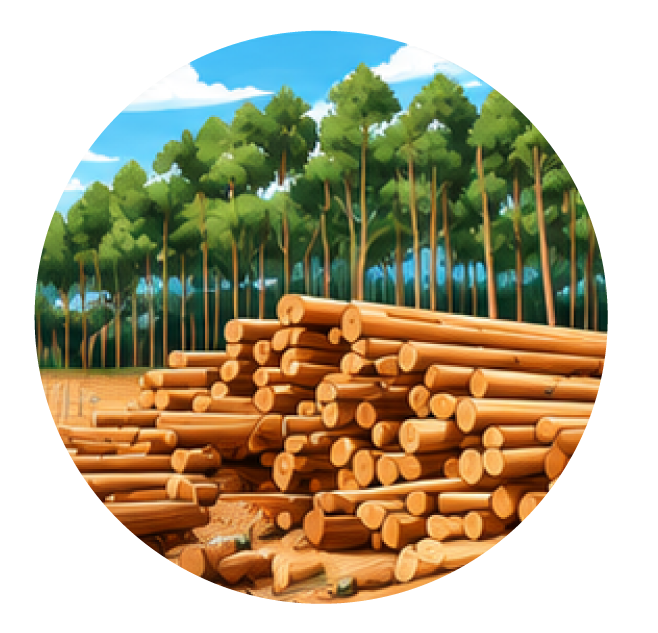
Madera para pulpa
De transformación primaria
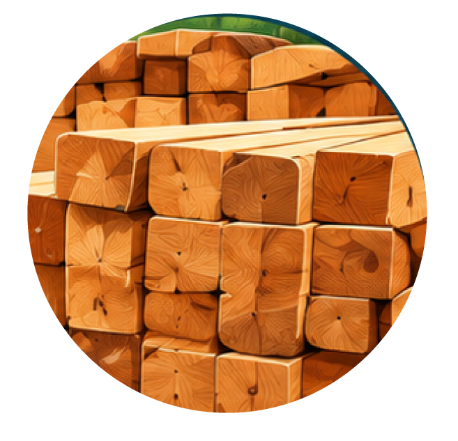
Bloque
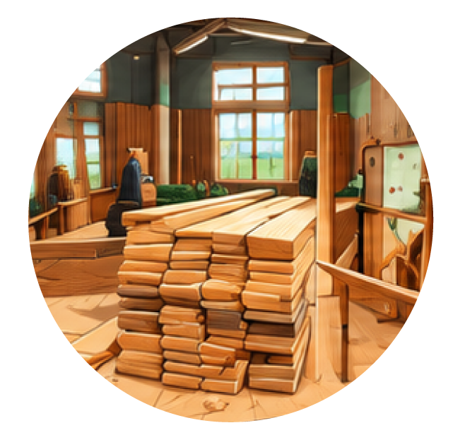
Tabla y tablón
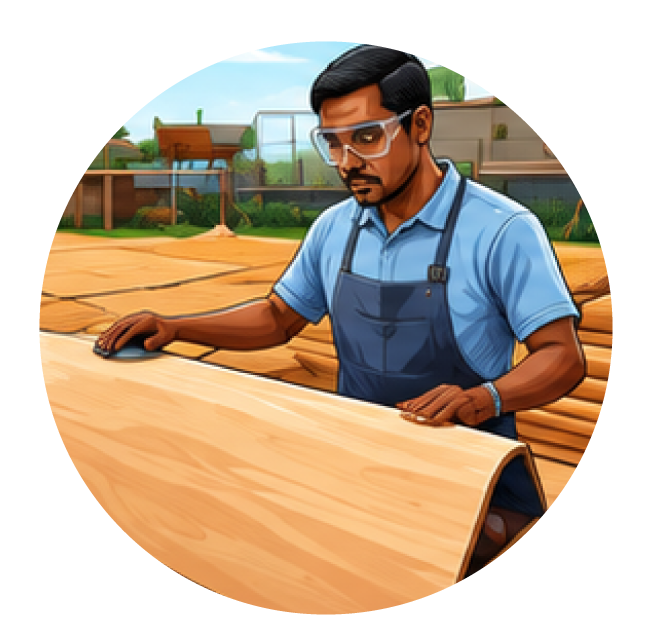
Chapas
De transformación secundaria
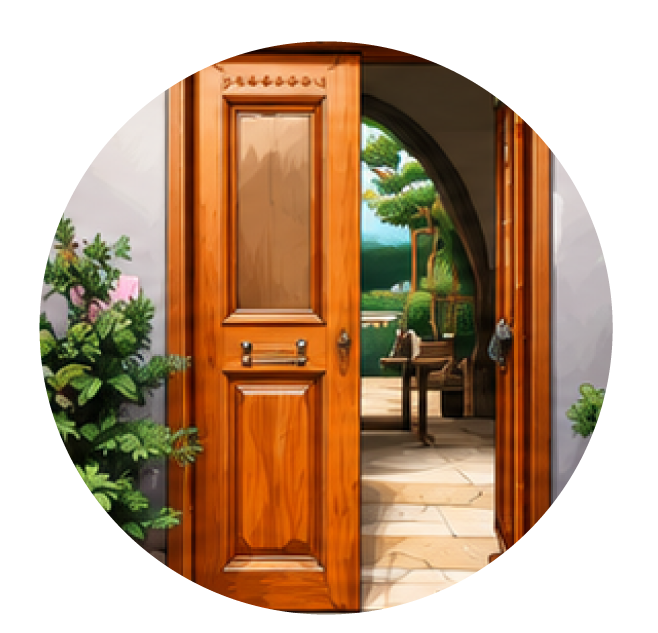
Puerta
Instrumento
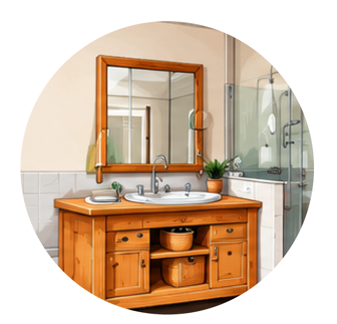
Mueble
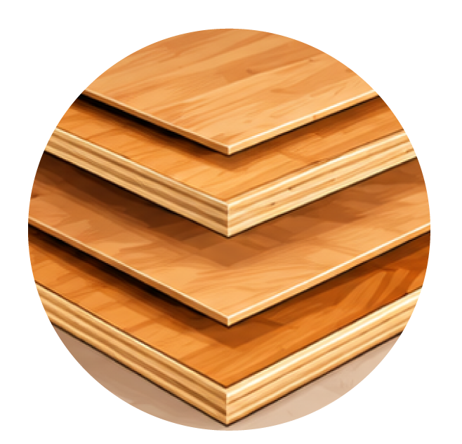
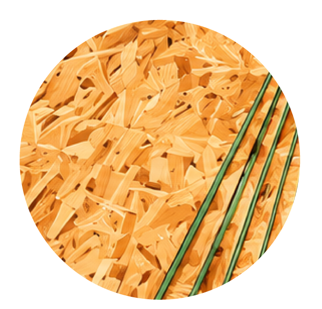
Tableros
Productos forestales maderables
La Resolución 1971 de 2019 - ANEXO No. 1. Especímenes objeto de registro en el LOFL, compila los parámetros de identificación de los productos forestales maderables y no maderables que deben ser registrados en el LOFL así:
Productos forestales maderables: es la madera que se obtiene del aprovechamiento de especies forestales, así como los productos y derivados que se obtengan de la transformación de esta. Se diferencian entre rollizos y aserrados.
Productos forestales de transformación primaria
Productos forestales de transformación primaria: son los productos obtenidos directamente a partir de las trozas, tales como: bloques, bancos, tablones, tablas y chapas, entre otros, sin ser sometidos a ningún proceso o grado de elaboración y/o de acabado industrial con mayor valor agregado.
Productos forestales de transformación secundaria
Productos forestales de transformación secundaria: productos de la madera obtenidos mediante diferentes procesos y grados de elaboración y de acabado industrial con mayor valor agregado como molduras, puertas, muebles, contrachapados y otros productos terminados afines.
Para resumir
Módulo 2
•Bosque natural.
•Plantaciones forestales protectoras- productoras.
•Árboles aislados.
•Cercas vivas.
•Barreras rompevientos.
•Árboles de sombrío.
•Árboles frutales con características leñosas.
•Guaduales y bambusales categorías 1 y 2.
Salvoconducto Único Nacional en Línea SUNL*
Certificado de movilización
de productos de transformación primaria
Remisión de empresa forestal REF
Origen del producto forestal maderable (aprovechamiento forestal)
Grado de transformación primaria
•Cultivos o plantaciones forestales comerciales.
•Sistemas Agroforestales SAF.
•Plantaciones forestales con recursos del Certificado de Incentivo Forestal.
•Barreras rompeviento y cercas vivas (que hagan parte de cultivos forestales, sistemas agroforestales y plantaciones CIF).
Grado de transformación secundaria o producto final
*Si el producto de transformación primaria proviene de una industria puede ser movilizado con REF. Si provienen de una industria, por tanto, siempre se debe verificar el origen de los productos para identificar qué documento de movilización aplica.
¡Relaciona cada producto forestal maderable con el documento que debe amparar su movilización!
Pon a prueba tus conocimientos
Módulo 2
Madera para pulpa de Eucalipto proveniente de plantaciones forestales protectoras productoras con recursos del Certificado de Incentivo Forestal CIF.
Certificado de movilización de productos de transformación primaria expedido por el ICA.
Salvoconducto Único Nacional en Línea – SUNL, expedido por la Autoridad Ambiental competente.
Remisión del Libro de Operaciones Forestales en Línea, expedido por la Autoridad Ambiental Competente.
Trozas de madera de Pino de cerca viva que no hace parte de cultivos forestales, sistemas agroforestales y plantaciones CIF provenientes del sitio de aprovechamiento.
Madera inmunizada, seca y cepillada de Nogal para la fabricación de muebles.
Retroalimentación:
Muy bien.
Continuar
Instrumentos Técnicos
Nuevas fichas técnicas con criterios ambientales 2019-2025
Con el objetivo de brindar herramientas a las entidades públicas para la implementación del programa de Compras Públicas Sostenibles, el Pacto por la Madera Legal con el apoyo de WWF Colombia, adelantó el desarrollo de la ficha para uso de Madera en Construcción y Mobiliarios Aglomerados, publicada en el año 2022 y actualizada en el año 2025.
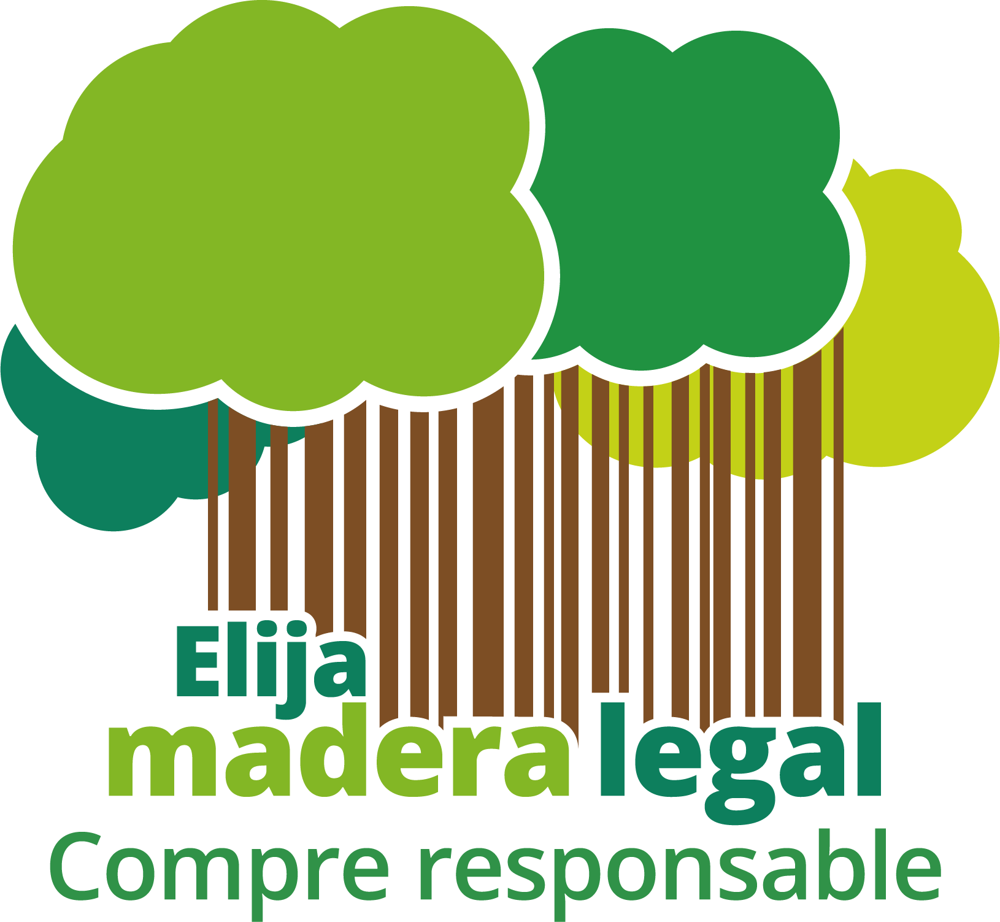
Ver más
Fuente: Ministerio de Ambiente y Desarrollo Sostenible. (2019). Ficha técnica con criterios ambientales para el servicio de rutas escolares. https://www.minambiente.gov.co/wp-content/uploads/2022/02/Nuevas-fichas-te%CC%81cnicas-con-criterios-ambientales-2019-2025-1.pdf
Guía para la compra responsable de madera en el sector de la construcción
Esta guía fomenta el uso de madera legal, acercando a las constructoras y a las empresas forestales legales del país.
Así mismo, la adopción de la guía genera una sensibilización hacia la sociedad ante los múltiples atributos e impactos positivos que genera utilizar productos de madera legal y sostenible.
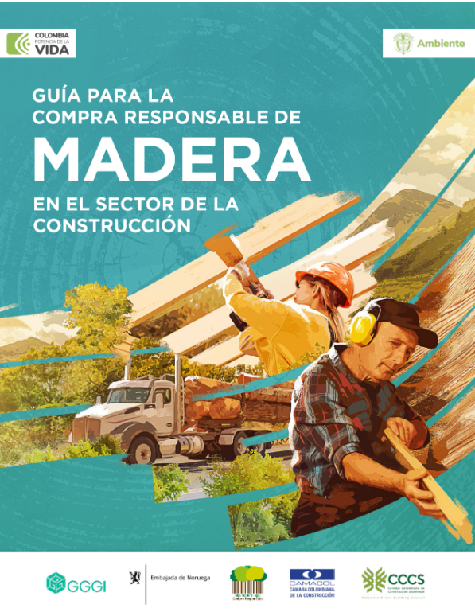
Ver más
Conoce más
Elija Madera Legal Compre Responsable - PIML. (2021). Madera Legal para el sector Construcción en Colombia [Video]. YouTube. https://www.youtube.com/watch?v=L_75HanqCBI
Fuente: Ministerio de Ambiente y Desarrollo Sostenible. (2023). Guía para la compra responsable de madera en el sector de la construcción. https://www.minambiente.gov.co/wp-content/uploads/2023/06/Guia-de-compra-responsable-de-madera_Final-ISBN.pdf
Reglamento Colombiano de Construcción Sismo Resistente
La NSR 10 cuenta con el Título G, dedicado a Estructuras de Madera y Estructuras de Guadua, determinando parámetros para su selección y uso en construcción.
La norma fue actualizada mediante el Decreto 1401 de 2023, incorporando la AIS 410-23 para la evaluación y reducción de la vulnerabilidad sísmica en viviendas de mampostería.
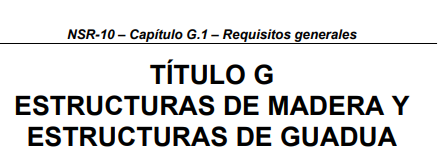
Ver más
Fuente: Ministerio de Ambiente, Vivienda y Desarrollo Territorial. (2010). Reglamento colombiano de construcción sismo resistente NSR-10. https://www.unisdr.org/campaign/resilientcities/uploads/city/attachments/3871-10684.pdf
Nuevas fichas técnicas con criterios ambientales 2019-2025
El objetivo de esta ficha técnica con criterios de sostenibilidad ambiental, aplicables a la adquisición de productos forestales maderables para construcciones estructurales (madera para vigas, columnas, cerchas, repisas, obras civiles, etc.); arquitectónicos (madera para fachadas, cielorrasos, puertas, pisos, paredes, ventanas, etc.); y productos mobiliarios y aglomerados, es contribuir a la compra y consumo responsable de productos maderables, considerando que en Colombia una de las principales causas de degradación de los bosques es la tala selectiva no sostenible de especies maderables.
Se compone de criterios y medios de verificación para las etapas precontractual y contractual.
Se invita a las entidades públicas a usar esta ficha como referencia para la adquisición de sus productos de base maderable, así como a las organizaciones privadas y de la sociedad civil a orientar sus programas de compra responsable basados en la ficha.
Guía para la compra responsable de madera en el sector de la construcción
Esta guía fue elaborada por la Secretaría Técnica del Pacto por la Madera Legal, liderada por la Dirección de bosques, biodiversidad y servicios ecosistémicos del Ministerio de Ambiente y Desarrollo Sostenible; el Instituto Global para el Crecimiento Verde (GGGI), CAMACOL, y el Consejo Colombiano de Construcción Sostenible en el año 2023, como una herramienta para facilitar la identificación, selección y compra responsable de productos de madera para ser utilizados en proyectos de construcción. Ofrece unos lineamientos sobre el consumo de madera responsable, cubriendo dos aspectos fundamentales: la legalidad y la sostenibilidad.
Se compone de siete capítulos: los tres primeros presentan una contextualización acerca de la madera, oferta y demanda, y su importancia y relación con el cuidado del medio ambiente; el cuarto capítulo presenta una serie de mecanismos para reconocer la legalidad-sostenibilidad aplicables a la compra de madera para el sector de la construcción; los capítulos quinto y sexto presentan las recomendaciones y criterios que pueden ser aplicados por las constructoras para una compra de madera responsable; y el séptimo capítulo da a conocer el paso a paso para garantizar una compra responsable de madera en el sector de la construcción.
Reglamento Colombiano de Construcción Sismo Resistente
El Título G de este reglamento establece los requisitos de diseño estructural para edificaciones de madera. Así, una edificación de madera diseñada y construida de acuerdo con los requisitos del Título G, tendrá un nivel de seguridad comparable al de edificaciones de otros materiales que cumplan los requerimientos del reglamento.
Esta norma se puede complementar con la Norma Técnica Colombiana NTC 2500 (Uso de la Madera en la Construcción), publicada por el Instituto Colombiano de Normas Técnicas y Certificación (ICONTEC), la cual se ocupa de la madera como material de construcción y de los procesos industriales y tratamientos, así como de los requisitos de fabricación, montaje, transporte y mantenimiento de elementos de madera.
También se invita a consultar la Norma Técnica Colombiana NTC 2500: Ingeniería Civil y Arquitectura - Uso de la madera en la construcción, la cual establece los requisitos obligatorios para el uso y tratamiento de la madera en la construcción dentro de Colombia, y puede ser adquirida en ICONTEC. La NSR-10 recomienda el uso simultáneo de ambas normas, pero para todos los aspectos priman las normas de la NSR-10.
Certificación Forestal Voluntaria
Instrumentos de Mercado
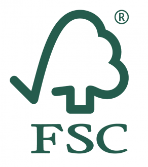
150+ millones
de hectáreas de bosques certificados.
55k+
certificaciones que verifican el abastecimiento sostenible.
1,600+
empresas con licencia para promocionar productos que cuentan con el sello FSC.
46%
de los consumidores de todo el mundo reconocen la etiqueta FSC.
Conoce más
Nota. Fuente https://fsc.org/es/acerca-de-fsc
Uso del logo únicamente ilustrativo
Consejo de Administración Forestal (FSC)
El Consejo de Administración Forestal (FSC) establece los estándares para un manejo forestal responsable con el fin de fomentar ecosistemas saludables y contribuir a la protección de los derechos de los trabajadores, los pueblos indígenas y las comunidades locales, basado en tres directrices para la silvicultura y uso sostenible de los bosques:
•Ambientalmente apropiadas.
•Socialmente beneficiosas.
•Económicamente viables.
•Las soluciones que ofrece la certificación están centradas en:
•Abastecimiento sostenible: ayudar a las empresas a trabajar con los bosques de modo responsable.
•Conservación: mantener y aumentar el valor de los bosques.
•Restauración: acelerar la recuperación de los bosques.
Fuente: Forest Stewardship Council International. (2023). Acerca de. FSC. https://fsc.org/es/acerca-de-fsc
Impacto en Colombia
Módulo 2
260,560
Hectáreas de plantaciones certificadas en Colombia.
20,873
Hectáreas de Bosque Natural certificadas en Colombia.
18
Certificados de Manejo Forestal y 18 sitios.
57
Certificados en Cadena de Custodia y 57 sitios.
11
Licencias Promocionales de Uso de Marca Activas y 5 terminadas.
8,300
Empleados en las organizaciones de Manejo Forestal y Cadena de Custodia (FM y CoC).
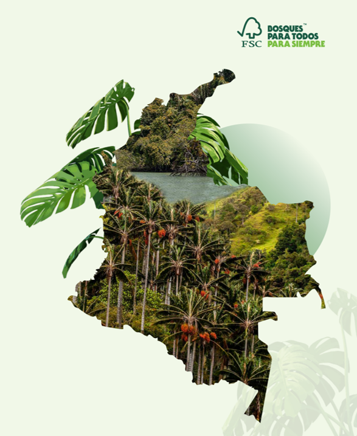
Empresas certificadas en Colombia
Conoce más
El FSC en Colombia
En Colombia, el FSC inició su actividad en 1996 y ya cuenta con un estándar nacional de manejo forestal responsable adaptado para el país, así como la primera empresa forestal comunitaria afrodescendiente certificada en Latinoamérica.
Fuente: Forest Stewardship Council International. (2026). Búsqueda a primer trimestre de 2026. FSC. https://search.fsc.org/es/search/?tab=undefined&country=COLOMBIA&status=Valid
Esquema de Reconocimiento a la Procedencia Legal
Instrumentos de Mercado
¿Qué es?
Es un proceso voluntario de verificación y reconocimiento que, a nivel nacional, pretende identificar y destacar a las pequeñas, medianas y grandes empresas de transformación y comercialización de madera, a fin de reconocer la legalidad de sus actividades, visibilizándolas ante mercados selectivos y la sociedad civil que desee comprar estos productos con conciencia ambiental.
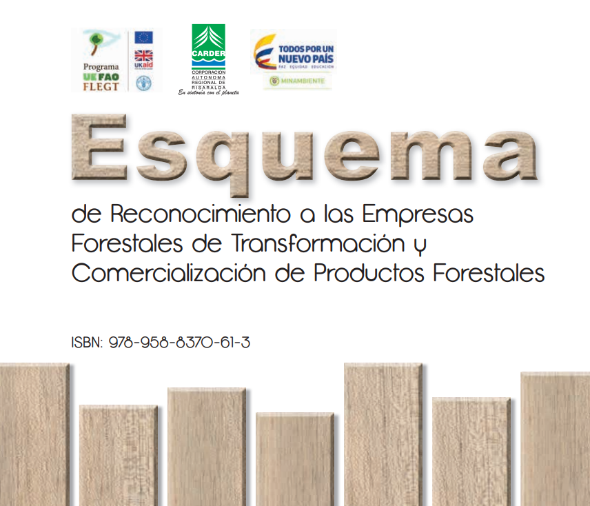
Conoce más
Elija Madera Legal Compre Responsable - PIML. (2020). Webinar PIMLC 31 julio / Esquema de Reconocimiento a la Procedencia Legal [Video]. YouTube. https://www.youtube.com/watch?v=bSFjKc7U33c
Ver más
Esquema de Reconocimiento a la Procedencia Legal
El objetivo de reconocer las empresas forestales de transformación y comercialización, y los productores forestales de manejo sostenible de bosque natural legales, es promover la legalidad de la oferta y la demanda de productos maderables y no maderables para mejorar los canales de comercialización, hacerlos identificables al consumidor y fortalecer la relación de los usuarios con la Autoridad Ambiental, para que ésta se convierta en una fuente de consulta, apoyo técnico y administrativo.
El tiempo del Reconocimiento será de un año. El tiempo de evaluación para obtener dicho reconocimiento lo definirá la Autoridad Ambiental competente de acuerdo con sus recursos humanos, técnicos y financieros.
Esquema de Reconocimiento a la Procedencia Legal
Módulo 2
Beneficios para los usuarios (empresas)
Visibiliza las empresas y productores forestales como un comercio forestal responsable, generando una imagen de confianza
Mejora la relación entre los usuarios del bosque y la Autoridad Ambiental
Optimiza el proceso forestal
Fortalece la relación entre el aprovechador, transformador y comerciante
Incentiva a los trabajadores en torno al cumplimiento de sus obligaciones legales
Mejora el conocimiento de los productos aprovechados
Mejora la administración de la empresa forestal
Mejora la competitividad forestal y la apertura hacia nuevos mercados
Ver más
Esquema de Reconocimiento a la Procedencia Legal
Formarán parte del esquema, todas aquellas empresas forestales que hayan cumplido exitosamente el proceso de verificación, y que cuenten con el reconocimiento otorgado por la autoridad ambiental competente.
¿Cómo acceder ?
Módulo 2
Verificador obligatorio
Si es un requisito establecido por el Decreto 1076 de 2015, o por la autoridad ambiental competente.
Obligatorio para el reconocimiento y para continuar con la calificación de los verificadores de carácter opcional y/o complementario.
Verificador opcional
Si aún no es solicitado por la A.A. o está en proceso de capacitación y adaptación para su cumplimiento.
Incluyen acciones de trazabilidad establecidas en los protocolos de gobernanza forestal.
Ver más
Evaluación de los verificadores
Los verificadores del esquema deben ser evaluados por el o los profesionales que, de acuerdo con su idoneidad, la autoridad ambiental competente designe.
Es recomendable que, de acuerdo con la complejidad y el tamaño de la operación forestal, esta sea realizada por un grupo de profesionales expertos en la materia. En lo posible, las visitas de evaluación deben realizarse por personal diferente al que participó en el proceso de evaluación y aprobación de la solicitud de aprovechamiento forestal.
Resultado
Módulo 2
Aprovechamiento bajo estándares internacionales
Todos obligatorios y opcionales
Todos obligatorios y opcionales en sus niveles de complejidad intermedios
Todos obligatorios y opcionales en sus niveles de complejidad básicos
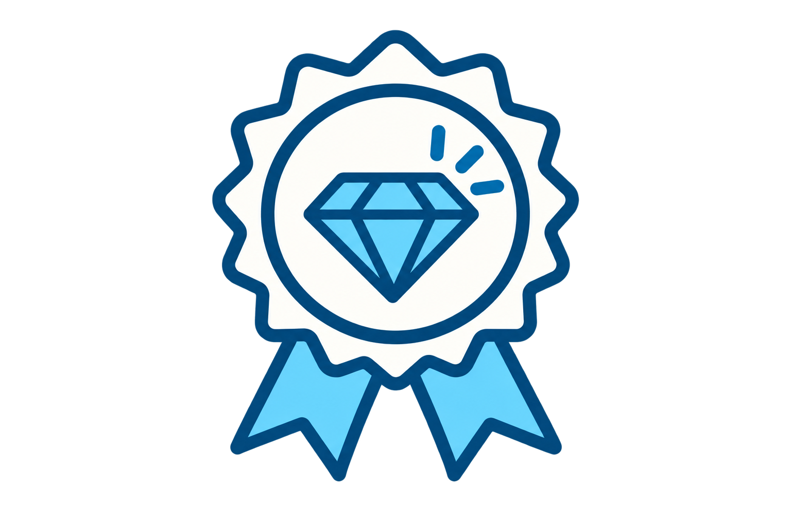
Diamante
| CATEGORÍA | RANGO |
|---|---|
| DIAMANTE | NA |
| ORO | > 89 |
| PLATINO | > 54 - < 89 |
| PLATA | 0 - 54 |
Ver más
Reconocimiento de la Autoridad Ambiental
A partir de la evaluación de verificadores obligatorios y opcionales, la empresa obtendrá un puntaje que lo clasificará en la categoría correspondiente. En consecuencia, le será entregado su reconocimiento a través de resolución por la Autoridad Ambiental.
El reconocimiento tendrá vigencia de un año, con el beneficio de visibilizar a la empresa y sus productos en la plataforma https://elijamaderalegal.com/.
Esquema de Reconocimiento a la Procedencia Legal
Módulo 2
Beneficios para el consumidor
Permite la adquisición de productos forestales legales y confiables
Permite una mejor identificación de las empresas forestales legales
Estimula la conciencia ambiental
Contribuye a mantener la oferta de productos forestales
Mejora la imagen del sector forestal
Genera mayor confianza en proveedores y en la cadena productiva
Se convierte en un consumidor responsable
Tiene confianza en su elección de compra y el impacto positivo
Pon a prueba tus conocimientos
Módulo 2
¿Qué es un verificador obligatorio?
¡Selecciona la respuesta correcta!
a.
Confirma que el producto se encuentra certificado.
b.
Acciones de trazabilidad establecidas en los protocolos de gobernanza forestal.
c.
Es un requisito establecido por el Decreto 1076/2015, o por la A.A. competente.
Retroalimentación:
Muy bien.
Continuar
Retroalimentación:
Revisa el contenido.
Reintentar
¡Relaciona la descripción con el instrumento!
Pon a prueba tus conocimientos
Módulo 2
Ficha para el Uso de Madera en Construcción y Mobiliarios Aglomerados
Instrumento técnico
Instrumento normativo
Instrumento de mercado
Decreto 1532 de 2019 del Ministerio de Ambiente y Desarrollo Sostenible
Certificación Forestal Voluntaria
Retroalimentación:
Muy bien.
Continuar
Completa la frase:
Uno de los beneficios de que una empresa cuente con el reconocimiento a la procedencia legal es que:
Pon a prueba tus conocimientos
Módulo 2
Mejora la
y la apertura hacia
competitividad forestal
nuevos mercados
______________
_____________
________________
_____________
Retroalimentación:
Muy bien.
Continuar
Retroalimentación:
Repasa el contenido.
Reintentar
Bibliografía
Módulo 2
•Congreso de la República de Colombia. (2022). Ley 2206 de 2022. Por medio del cual se incentiva el uso productivo de la guadua y el bambú y su sostenibilidad ambiental en el territorio nacional. Diario Oficial Nº 52037. http://www.secretariasenado.gov.co/senado/basedoc/ley_2206_2022.html
•IDEAM., & Ministerio de Ambiente y Desarrollo Sostenible. (2024). Propuesta del nivel de referencia de las emisiones forestales de Colombia para el periodo 2023-2027 como mecanismo para optar al pago por resultados de REDD+ bajo la CMNUCC. Programa ONU REDD Colombia. https://redd.unfccc.int/media/colombia_submission_nref_2023_-_2027_vf.pdf
•Instituto Colombiano de Normas Técnicas y Certificación (ICONTEC). (1997). Norma Técnica Colombiana NTC 2500. https://pdfcoffee.com/ntc-2500pdf-5-pdf-free.html
•Ministerio de Ambiente y Desarrollo Sostenible. (s.f.). Ordenación y Manejo de Bosques. https://www.minambiente.gov.co/direccion-de-bosques-biodiversidad-y-servicios-ecosistemicos/ordenacion-y-manejo-de-bosques-2/
•Ministerio de Ambiente y Desarrollo Sostenible. (2017). Resolución 1909 de 2017. Por la cual se establece el Salvoconducto Único Nacional en Línea para la movilización de especímenes de la diversidad biológica. Diario Oficial Nº 50362. https://www.minambiente.gov.co/wp-content/uploads/2021/11/resolucion-1909-de-2017.pdf
•Ministerio de Ambiente y Desarrollo Sostenible. (2019). Resolución 1971 de 2019. Por la cual se establece el Libro de Operaciones Forestales en Línea y se dictan otras disposiciones. Diario Oficial Nº 51159. https://www.minambiente.gov.co/documento-normativa/resolucion-1971-de-2019
•Ministerio de Ambiente y Desarrollo Sostenible. (2024). Resolución 0126 de 2024. Por la cual se establece el listado oficial de las especies silvestres amenazadas de la diversidad biológica colombiana continental y marino costera, se actualiza el Comité Coordinador de Categorización de las Especies Silvestres Amenazadas en el territorio nacional y se dictan otras disposiciones. https://www.minambiente.gov.co/documento-normativa/resolucion-0126-de-2024
Bibliografía
Módulo 2
•Ministerio de Ambiente, Vivienda y Desarrollo Territorial. (2010). Reglamento colombiano de construcción sismo resistente NSR-10. https://www.unisdr.org/campaign/resilientcities/uploads/city/attachments/3871-10684.pdf
•Moreno, R., Villota, N., Gutiérrez, E., Zúñiga, J., & Trujillo, J. (2016). Esquema de Reconocimiento a la Procedencia Legal y de Promoción hacia el Manejo Sostenible en el Aprovechamiento Forestal de Bosques Naturales. Ministerio de Ambiente y Desarrollo Sostenible - MADS. https://www.minambiente.gov.co/wp-content/uploads/2021/10/Esquema-Bosque-Natural.pdf
•Presidencia de la República de Colombia. (2015). Decreto 1071 de 2015. Por medio del cual se expide el Decreto Único Reglamentario del Sector Administrativo Agropecuario, Pesquero y de Desarrollo Rural. Diario Oficial Nº 49523. https://www.funcionpublica.gov.co/eva/gestornormativo/norma.php?i=76838
•Presidencia de la República de Colombia. (2015). Decreto 1076 de 2015. Por medio del cual se expide el Decreto Único Reglamentario del Sector Ambiente y Desarrollo Sostenible. Diario Oficial Nº 49523. https://www.alcaldiabogota.gov.co/sisjur/normas/Norma1.jsp?i=62511
•Presidencia de la República de Colombia. (2018). Decreto 1390 de 2018. Por el cual se adiciona un Capítulo al Título 9, de la Parte 2, del Libro 2, del Decreto 1076 de 2015, Decreto Único Reglamentario del Sector Ambiente y Desarrollo Sostenible, en lo relacionado con la Tasa Compensatoria por Aprovechamiento Forestal Maderable en bosques naturales y se dictan otras disposiciones. Diario Oficial Nº 50673. https://www.minambiente.gov.co/documento-normativa/decreto-1390-de-2018
•Presidencia de la República de Colombia. (2019). Decreto 1532 de 2019. Por medio del cual se modifica la Sección 1 del Capítulo 1 del Título 2 de la Parte 2 del Libro 2 y se sustituye la Sección 12 del Capítulo 1 del Título 2 de la Parte 2 del Libro 2 del Decreto Único Reglamentario del Sector Ambiente y Desarrollo Sostenible 1076 de 2015, en relación con las plantaciones forestales. https://www.minambiente.gov.co/documento-normativa/decreto-1532-de-2019
•Presidencia de la República de Colombia. (2020). Resolución 071641 de 2020 del ICA. Por medio de la cual se establecen los requisitos y los procedimientos para el registro ante el ICA de plantaciones forestales comerciales y la expedición de certificados de movilización de productos de transformación primaria obtenidos de las plantaciones forestales comerciales registradas en el territorio nacional”. https://www.ica.gov.co/servicios_linea/forestalesprincipal/resolucion-71641-del-15-de-julio-2020-forestales.aspx
Finalizaste los contenidos del Módulo 2
con éxito.
Instrumentos para la compra y consumo responsable de productos forestales maderables
Módulo 2
Felicitaciones